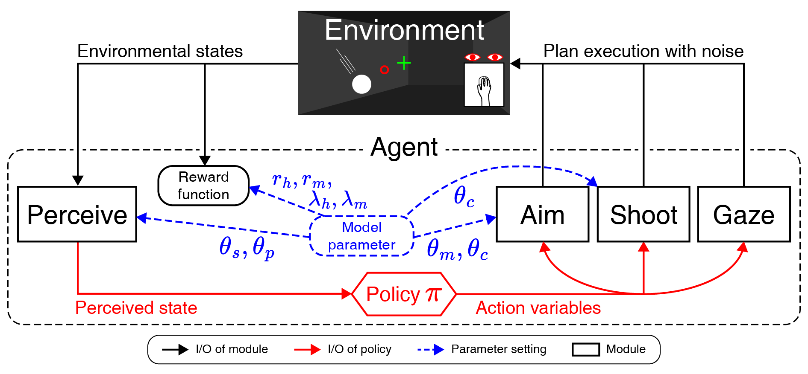
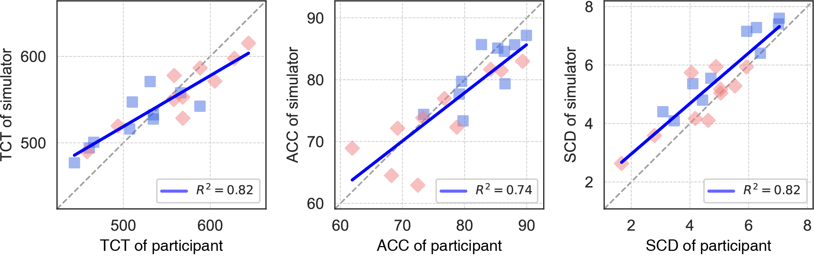
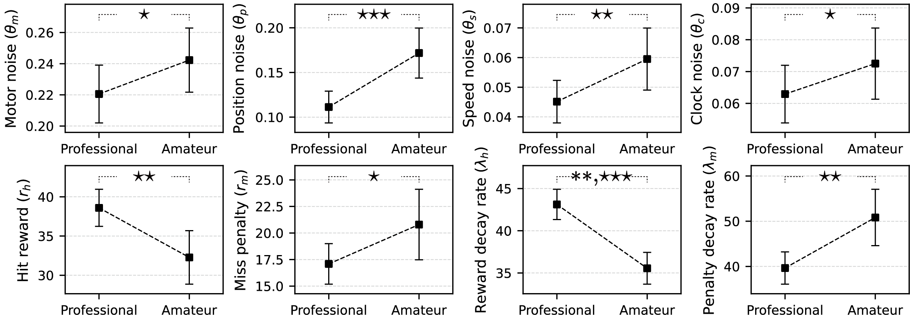

Project Page
Modeling visually-guided aim-and-shoot behavior in first-person shooters
- We proposed a novel computational model simulating aim-and-shoot behavior, including hand and gaze behavior, of FPS players.
- Our model successfully reproduced the actual behavior of 20 players, including 10 professionals.
- Inferred parameters from the empirical dataset gave insight into how professionals might have achieved better aim-and-shoot performance than amateurs.
Model

We model aim-and-shoot behavior as a virtual FPS player built under the computational rationality framework. Computational rationality explains human behavior as the outcome of an optimal policy under given constraints, including cognitive, physical, bodily, and environmental constraints, that maximizes expected utility or reward.
The agent consists of four submodules. The Perceive module estimates the crosshair state and the target's position and speed. The Aim module creates mouse/camera motor plans to align the target with the crosshair. The Gaze module simulates gaze-control behavior during aiming. The Shoot module decides whether and when to click while the motor and gaze plans are being executed.
A policy function coordinates those modules by choosing actions from the perceived state. We use deep reinforcement learning to train this policy because the model must discover reward-maximizing aim, gaze, and shoot decisions across many task conditions and player-parameter settings. In this implementation, reinforcement learning is the optimization method that turns the computational-rationality account into an executable behaving agent.
| Parameter | Range | Description | Module |
|---|---|---|---|
| Cognitive θ | |||
| θm | [0.0, 0.5] | Signal-dependent motor noise | Aim |
| θp | [0.0, 0.5] | Peripheral vision noise | Perceive |
| θs | [0.0, 0.5] | Speed perception noise | Perceive |
| θc | [0.0, 0.5] | Internal clock precision | Aim, Shoot |
| Reward r | |||
| rh | [1, 64] | Maximum trial success (target hit) reward | |
| rm | [1, 64] | Maximum trial failure (target miss) penalty | |
| λh | [5, 95] | Temporal decay rate of trial success reward | |
| λm | [5, 95] | Temporal decay rate of trial failure penalty | |
The eight parameters in the table are treated as latent player features. Four cognitive-noise parameters control motor noise, peripheral vision noise, speed perception noise, and internal clock precision; four reward parameters control the agent's success reward, failure penalty, and their temporal decay. Inferring these parameters from empirical behavior lets the model describe not only what a player did, but also which hidden cognitive or motivational factors may have shaped that behavior.
Validation
We validated the model against an empirical dataset collected from 20 FPS players: 10 active professionals and 10 amateur players. Participants performed a controlled aim-and-shoot task while their hand/camera behavior and gaze behavior were recorded.
- User study. The dataset captured real aim-and-shoot behavior across controlled target conditions, providing player-level trajectories and summary measures for model fitting. Professionals exhibited significantly shorter trial completion time (TCT) and higher accuracy (ACC) than amateurs.
- Parameter inference. We used amortized inference to fit the simulation model to empirical behavior at real-time speed. Technically, a neural inference engine is trained on simulated behavior to recover the ground-truth parameters that generated each simulation. Once trained, the engine can infer a player's latent parameters from observed trajectories and summary statistics in a single forward pass. Per-parameter recovery performance reached an average R2 of 0.81.


Abstract
In first-person shooters, players aim by aligning the crosshair onto a target and shoot at the optimal moment. Since winning a match is largely determined by such aim-and-shoot skills, players demand quantitative evaluation of the skill and analysis of hidden factors in performance. In response, we build a simulation model of the cognitive mechanisms underlying aim-and-shoot behavior based on the computational rationality framework. Unlike typical aimed movements in HCI, such as pointing, the aim-and-shoot offers a unique task scenario: as players move the mouse with their hand, the first-person view camera rotates, which in turn directly affects the target's visible position on the screen. To realistically simulate such complex mechanisms, we model players' perceptual, decision-making, and motor processes more sophisticatedly than any existing model. Model fitting based on amortized inference showed that our model could successfully reproduce the behavior of 20 FPS players (10 professionals) on several key measures, outperforming a baseline. Additionally, model fit parameters revealed that professionals had distinct cognitive or motivational characteristics.
BibTeX
@article{yoon2025modeling,
title={Modeling visually-guided aim-and-shoot behavior in first-person shooters},
author={Yoon, June-Seop and Moon, Hee-Seung and Boudaoud, Ben and Spjut, Josef and Frosio, Iuri and Lee, Byungjoo and Kim, Joohwan},
journal={International Journal of Human-Computer Studies},
volume={199},
pages={103503},
year={2025},
publisher={Elsevier}
}